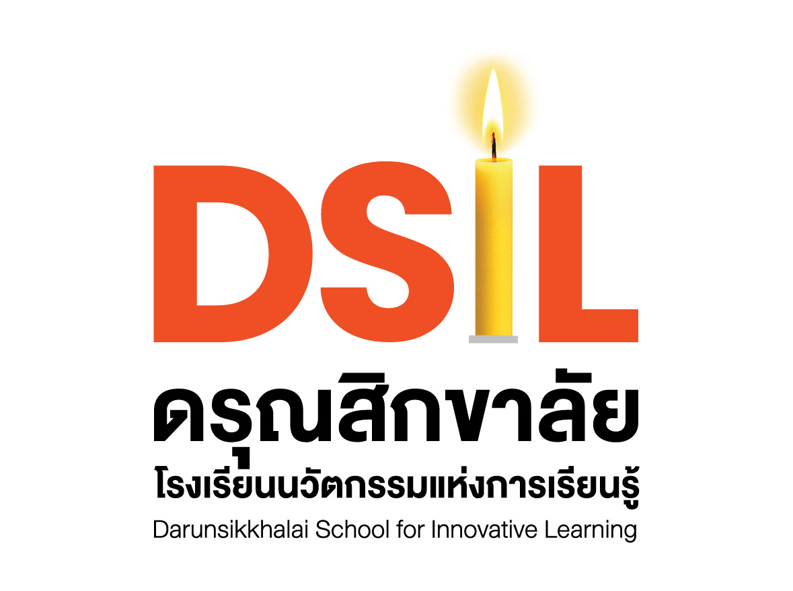

Professional Experience


Darunsikkhalai School
2023 – 2025 | PR & Marketing
Responsibilities:
- ผลิตและตัดต่อวิดีโอเพื่อใช้ในการประชาสัมพันธ์กิจกรรมและโครงการของโรงเรียน
- ถ่ายภาพกิจกรรมสำคัญต่าง ๆ เพื่อนำเสนอผ่านช่องทางออนไลน์และออฟไลน์
- ออกแบบและจัดทำกราฟิกสำหรับสื่อประชาสัมพันธ์
What I Learned:
- พัฒนาทักษะด้านการเล่าเรื่องผ่านสื่อภาพและวิดีโอ
- เข้าใจขั้นตอนการสร้างสื่อประชาสัมพันธ์ที่มีประสิทธิภาพ
- ฝึกการทำงานร่วมกับทีมงานและประสานงาน

GameDoubleD: Coding For Kids (Roblox Studio, Scratch)
2025 – Present
Responsibilities:
- ช่วยสอนและดูแลน้อง ๆ เด็กเล็กเวลาเรียนเขียนโค้ด
- คอยช่วยในคลาส Roblox Studio และ Scratch เวลาเด็กติดปัญหา
What I Learned:
- ได้ลองออกแบบกิจกรรมโค้ดดิ้งให้น้อง ๆ เล่นสนุกและเข้าใจง่าย
- เข้าใจวิธีคิดและมุมมองของเด็ก ๆ รุ่นใหม่ที่ต่างจากเรา

Teaching Assistant — Media Technology (Maya, Unity)
2025
Responsibilities:
- ช่วยสอนการใช้ Maya และ Unity ในคลาสเรียน
- คอยตอบคำถามและช่วยแก้ปัญหาเวลาเพื่อน ๆ หรือน้อง ๆ ติดขัด
What I Learned:
- ได้ประสบการณ์การเป็นผู้ช่วยสอน ทั้งด้านเนื้อหาและการลงมือทำจริง
- ฝึกอธิบายเรื่องเทคนิคให้คนอื่นเข้าใจง่ายขึ้น